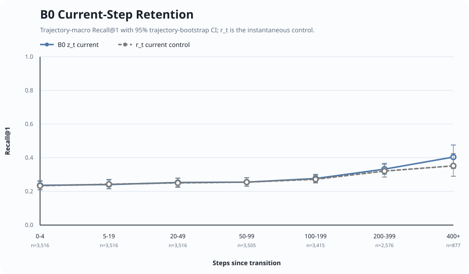
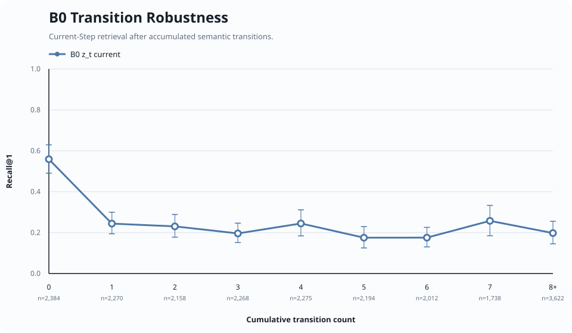
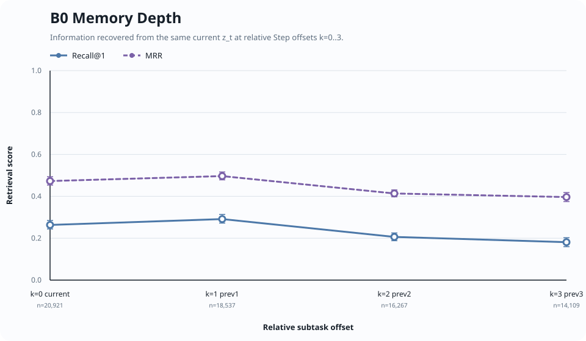
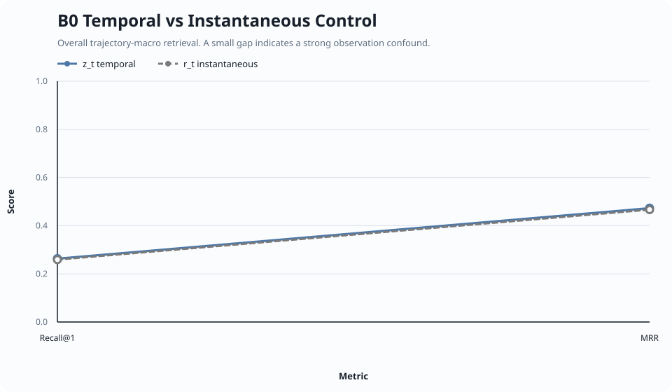
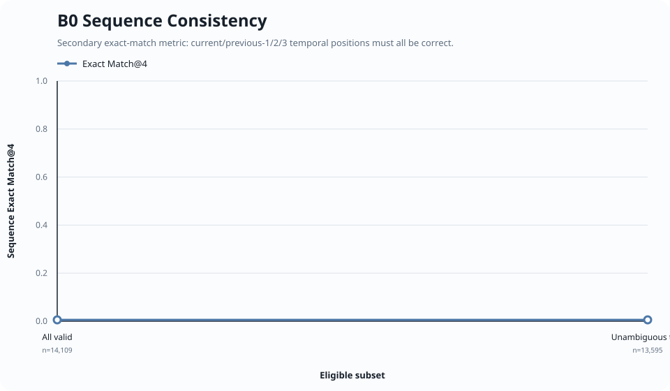

Stage B Memory Evaluation — B0
Frozen-backbone linear retrieval probes · trajectory-macro estimates · 95% trajectory bootstrap
Current retention

Transition robustness

Memory depth

Instantaneous control

Sequence consistency
